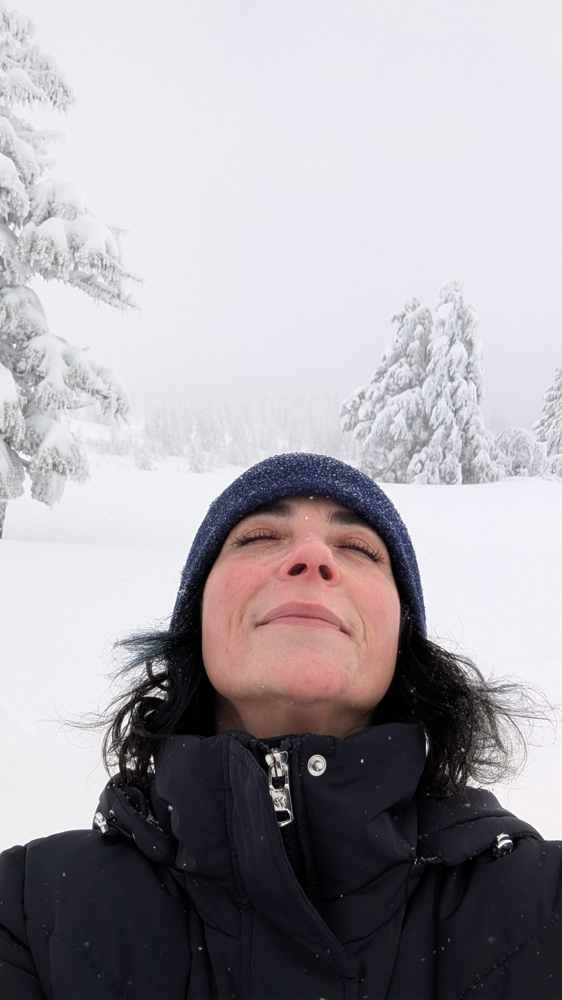

Ope...A Life
3
#ope

Any time you start thinking the world is a fair and just place, remember this picture. How a schlub like me ended up with an amazing, wonderful, beautiful, intelligent, fun person like this is proof it's an unfair universe/multiverse.
#ope
Stacy thought she'd celebrate the new year by doing the polar bear plunge thing. Except we live on the Oregon Coast, so it's cold and rainy and windy but not snowy or icy. It was held in the bay. The air temp was 41*F. The water temp was around 47*F. She, and a bunch of other folk, ran from the beach into the water. The seals stopped "sunning" themselves on the spit across the bay and swam over to see what the primates were up to. She'd never been in saltwater before. When she dunked herself her mouth was open. Saltwater is grody. She had such a great time she went back in for a second round. Two friends did it with her. I and a husband of one of the others guarded the warm clothes and took lots of pics. It was an official kinda thing put on by the rec center. Over 400 people attended.
The rest of the day was spent snuggling in the big chair and watching old episodes of Due South. Good way to ring in the new year.
We went to Timberline Lodge for our 29th anniversary. Have to write it up. It will live here when I get it up.
caveat lector